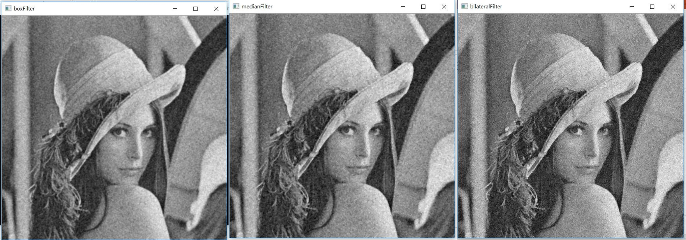
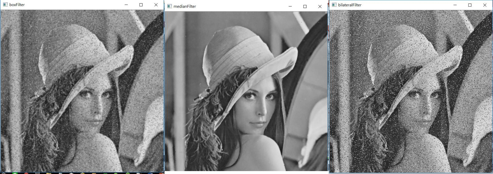

3-4將雜訊的圖片濾波(BoxFilter, 中值濾波, bilateral filter)
程式說明:
運行結果:
底下是高斯雜訊做filter, 第一張圖是做了box filter, 第二張是做了median filter, 第三張是做了bilateral filter

底下是椒鹽雜訊做filter, 第一張圖是做了box filter, 第二張是做了median filter, 第三張是做了bilateral filter

範例程式:
#include <iostream>
#include <opencv2/opencv.hpp>
#include <opencv2/highgui/highgui.hpp>
int main(int argc, char** argv)
{
cv::Mat imgWithGaussianNoise = cv::imread("ImgWithGaussianNoise.bmp", 0);
cv::Mat imgWithPepperSaltNoise = cv::imread("ImgWithPepperSaltNoise.bmp", 0);
if (imgWithGaussianNoise.empty() || imgWithPepperSaltNoise.empty())
{
std::cout << "無法讀取圖片" << std::endl;
return -1;
}
cv::Mat imgWithGaussianNBox, imgWithGaussianNMedian, imgWithGaussianNBilateral;
cv::Mat imgWithPepperSaltNBox, imgWithPepperSaltNMedian, imgWithPepperSaltNBilateral;
cv::boxFilter(imgWithGaussianNoise, imgWithGaussianNBox, -1, cv::Size(3, 3));
cv::medianBlur(imgWithGaussianNoise, imgWithGaussianNMedian, 3);
cv::bilateralFilter(imgWithGaussianNoise, imgWithGaussianNBilateral, 10, 20,20);
cv::boxFilter(imgWithPepperSaltNoise, imgWithPepperSaltNBox, -1, cv::Size(3, 3));
cv::medianBlur(imgWithPepperSaltNoise, imgWithPepperSaltNMedian, 3);
cv::bilateralFilter(imgWithPepperSaltNoise, imgWithPepperSaltNBilateral, 10, 20, 20);
cv::imshow("boxFilter", imgWithGaussianNBox);
cv::waitKey(0);
cv::imshow("medianFilter", imgWithGaussianNMedian);
cv::waitKey(0);
cv::imshow("bilateralFilter", imgWithGaussianNBilateral);
cv::waitKey(0);
cv::imshow("boxFilter", imgWithPepperSaltNBox);
cv::waitKey(0);
cv::imshow("medianFilter", imgWithPepperSaltNMedian);
cv::waitKey(0);
cv::imshow("bilateralFilter", imgWithPepperSaltNBilateral);
cv::waitKey(0);
return 0;
}